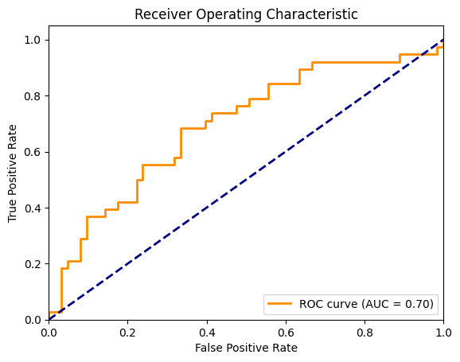

import TopDownHockey_Scraper.TopDownHockey_NHL_Scraper as tdhnhlscrape
import TopDownHockey_Scraper.TopDownHockey_EliteProspects_Scraper as tdhepscrape
from nhlpy import NHLClientSTAT468 Final Project
The objective of this project is to investigate the relationship between OHL performance / player build and NHL career longevity. We will analyze how various factors such as goals per game, assists per game, height, and weight influence the probability of a player playing more than 200 games in the NHL.
CHAPTER 1: IMPORT
The first step in our project is to import the necessary libraries and data:
import pandas as pd
from datetime import date
import statsmodels.api as sm
import numpy as np
from sklearn.linear_model import LogisticRegression
from lets_plot import *
LetsPlot.setup_html()
from pins import board_s3
from vetiver import vetiver_pin_write
from vetiver import VetiverModel
from sklearn.metrics import roc_curve, auc
import matplotlib.pyplot as plt
from vetiver.handlers.base import BaseHandler
import statsmodels.api as smWe will create a toggle to see if we want to rescrape the data or just import the prior scrape from an existing file. If scrape is set to True, we will scrape the data; otherwise, we will read from the existing file.
scrape = False # Set to True to scrape data, False to use existing data
#This will be the file name where data is stored in our git repo
filename = "regression_input.xlsx"First, we loop through a bunch of seasons and scrape player OHL stats and builds. Note that we get rid of player positions so that we can join with player builds using names as index. While this is mixing some of steps 2&3 (Tidy&Transform), it’s easier to do it here since we want to get the player builds at the time of the draft, and it would be confusing to do the join later on, when we’re outside the loop and the stats&builds may not correspond to one another since they could be from seperate years.
#Get OHL Player Data (stats, build, etc)
if scrape == True:
#Can't include all years because of backend API issues in some years
years = ["2004-2005", "2006-2007", "2007-2008", "2008-2009", "2009-2010", "2010-2011", "2011-2012", "2012-2013", "2013-2014",
"2014-2015", "2015-2016", "2016-2017", "2017-2018", "2018-2019"]
aggregated_output = pd.DataFrame()
for year in years:
df = tdhepscrape.get_skaters(("ohl"), (year))
#GET PLAYER INFO
info = tdhepscrape.get_player_information(df)
#GET RID OF DEFENCEMEN
df = df[~df['player'].str.contains(r'\(([^)]*D[^)]*)\)', regex=True)]
#GET RID OF PLAYER POSITIONS FROM NAMES
df['player'] = df['player'].str.replace(r'\s*\([^)]*\)', '', regex=True)
#ADD YEAR TO DF
df.insert(0, "year", year)
#JOIN PLAYER BIO WITH STATS
year_output = pd.merge(df[["year", "player", "gp", "g", "a", "tp"]], info[["player", "dob", "height", "weight", "shoots"]], on='player', how='inner')
#ADD CURRENT YEAR PROSPECTS TO AGGREGATED DF
aggregated_output = pd.concat([aggregated_output, year_output])
else:
print("Scrape completed prior")Scrape completed priorNext, we print the draftyears of all NHL players drafted between 2005 and 2020
if scrape == True:
years = list(range(2005, 2021))
draftyears = pd.DataFrame()
for year in years:
df_list = pd.read_html(f"https://www.hockey-reference.com/draft/NHL_{year}_entry.html", match="Round")
players_drafted = df_list[0]
players_drafted
#Let's get rid of the top header that isnt really used
players_drafted.columns = players_drafted.columns.get_level_values(1)
players_drafted["draft_year"] = year
players_drafted = players_drafted[["draft_year", "Player"]]
players_drafted =players_drafted.rename(columns={"draft_year": "player_draft_year", "Player": "player"})
draftyears = pd.concat([draftyears, players_drafted])
print(draftyears) Finally, we get the games played for all NHL players to have played at least 1 game in the NHL. We will use this to calculate the probability of a player playing more than 200 games in the NHL.
#Getting games played for all NHL players
if scrape == True:
nhl_gp = pd.DataFrame()
pages = list(range(1, 80))
for page in pages:
df_list = pd.read_html(f"https://www.eliteprospects.com/league/nhl/stats/all-time?page={page}")
page_stats = df_list[2]
page_stats = page_stats[["Player", "GP"]]
nhl_gp = pd.concat([nhl_gp, page_stats])
nhl_gp = nhl_gp.rename(columns={"Player": "player", "GP": "nhl_gp"})
#GET RID OF PLAYER POSITIONS FROM NAMES
nhl_gp['player'] = nhl_gp['player'].str.replace(r'\s*\([^)]*\)', '', regex=True)
# Replacing NA and "-" values with 0
nhl_gp["nhl_gp"] = nhl_gp["nhl_gp"].fillna(0)
nhl_gp["nhl_gp"] = nhl_gp["nhl_gp"].replace("-", 0)
nhl_gpCHAPTER 2: TIDY
Next, we change the type of some columns - they are objects by default, we need them to be integeres to regress on them later on. We also replace “-” values with 0 for regression purposes, since “-” means that the player did not play in that season, and we want to treat that as 0 games played.
if scrape == True:
aggregated_output["gp"] = aggregated_output["gp"].replace("-", 0)
aggregated_output["gp"] = aggregated_output["gp"].astype(int)
aggregated_output["g"] = aggregated_output["g"].replace("-", 0)
aggregated_output["g"] = aggregated_output["g"].astype(int)
aggregated_output["a"] = aggregated_output["a"].replace("-", 0)
aggregated_output["a"] = aggregated_output["a"].astype(int)
aggregated_output["tp"] = aggregated_output["tp"].replace("-", 0)
aggregated_output["tp"] = aggregated_output["tp"].astype(int)Get corresponding draft year for each row in the dataset (oe. season 2024-2025 would have a draft year of 2025).
Note this isn’t necessarily the players’ draft year - it’s just the draft year for the corresponding row’s season. We will use this to only keep rows where the draft year is the same as the player’s actual draft year.
if scrape == True:
aggregated_output["draft_year"] = aggregated_output["year"].str[5:]
aggregated_output["draft_year"] = aggregated_output["draft_year"].astype(int)
aggregated_outputJoin games played and draft year onto each row of the OHL player data dataset.
#Join GP, draft year onto OHL player data
if scrape == True:
#MAKE ALL PLAYER NAMES UPPERCASE (TO MAKE JOINING TABLES NON CASE SENSITIVE)
aggregated_output['player'] = aggregated_output['player'].str.upper()
draftyears['player'] = draftyears['player'].str.upper()
nhl_gp['player'] = nhl_gp['player'].str.upper()
#Filter ohl stats for only drafted players' draft year stats -
#This will get rid of a) undrafted players, and b) drafted players non-draft year stats
df = pd.merge(aggregated_output, draftyears, left_on=['player', 'draft_year'], right_on=['player', 'player_draft_year'], how='inner')
#Can get rid of one of the draft year columns - don't need both
df = df[["year", "player", "gp", "g", "a", "tp", "dob", "height", "weight", "shoots", 'draft_year']]
#Join players' games played - if player gp not found, assume it to be 0.
df = pd.merge(df, nhl_gp, left_on=['player'], right_on=['player'], how='left')
df["nhl_gp"] = df["nhl_gp"].fillna(0)
df["nhl_gp"] = df["nhl_gp"].astype(int)
df.to_excel(filename, index=False)Finally, some miscallaneous tidying. Refer to comments for more information.
df = pd.read_excel(filename)
#Changing the weight to a numerical variate in kg
df["weight_kg"] = df["weight"].apply(lambda x: x[:x.find(" ")])
df["weight_kg"] = df["weight_kg"].astype(int)
df.dtypes
#Can get rid of intermediate columns
df = df.drop(["weight"], axis = 1)
#Renaming height column to height_cm for clarity
df = df.rename(columns = {"height": "height_cm"})
df| year | player | gp | g | a | tp | dob | height_cm | shoots | draft_year | nhl_gp | weight_kg | |
|---|---|---|---|---|---|---|---|---|---|---|---|---|
| 0 | 2004-2005 | BOBBY RYAN | 62 | 37 | 52 | 89 | 1987-03-17 | 188 | R | 2005 | 866 | 95 |
| 1 | 2004-2005 | DAN RYDER | 68 | 29 | 53 | 82 | 1987-01-12 | 180 | R | 2005 | 0 | 88 |
| 2 | 2004-2005 | CAL O'REILLY | 68 | 23 | 50 | 73 | 1986-09-30 | 183 | L | 2005 | 145 | 85 |
| 3 | 2004-2005 | STEVE DOWNIE | 61 | 21 | 52 | 73 | 1987-04-03 | 180 | R | 2005 | 434 | 87 |
| 4 | 2004-2005 | EVAN BROPHEY | 63 | 28 | 43 | 71 | 1986-12-03 | 185 | L | 2005 | 4 | 92 |
| ... | ... | ... | ... | ... | ... | ... | ... | ... | ... | ... | ... | ... |
| 311 | 2018-2019 | TYLER ANGLE | 58 | 20 | 24 | 44 | 2000-09-30 | 178 | L | 2019 | 4 | 78 |
| 312 | 2018-2019 | NICHOLAS PORCO | 67 | 20 | 16 | 36 | 2001-03-12 | 186 | L | 2019 | 0 | 85 |
| 313 | 2018-2019 | GRAEME CLARKE | 55 | 23 | 11 | 34 | 2001-04-24 | 183 | R | 2019 | 3 | 79 |
| 314 | 2018-2019 | MASON PRIMEAU | 69 | 13 | 20 | 33 | 2001-07-28 | 195 | L | 2019 | 0 | 92 |
| 315 | 2018-2019 | JAMIESON REES | 37 | 10 | 22 | 32 | 2001-02-26 | 179 | L | 2019 | 0 | 84 |
316 rows × 12 columns
STEP 3: TRANSFORM
Creating some new stats (age at draft, goals per game, points per game, and an indicator variable for whether the player has played at least 200 NHL games). These will all be used in the regression later on.
#Getting the age of the player at the time of draft (for simplicity, we will assume draft to be on June 30 for all years)
df["draft_date"] = df["draft_year"].astype(str) + '-06-30'
df["draft_date"] = pd.to_datetime(df["draft_date"])
df["dob"] = pd.to_datetime(df["dob"])
df["age_days"] = (df["draft_date"] - df["dob"])
df["age_days"] = df["age_days"].dt.days
#Can get rid of intermediate columns
df = df.drop(["draft_date", "draft_year", "dob"], axis = 1)
#Adding columns for goals/g and points/g
df["gpg"] = df["g"] / df["gp"]
df["apg"] = df["a"] / df["gp"]
#Create indicator variable to measure if the player has played at least 200 nhl games
df["Pr[GP > 200]"] = df["nhl_gp"] >= 200
df["Pr[GP > 200]"] = df["Pr[GP > 200]"].astype(int)
df| year | player | gp | g | a | tp | height_cm | shoots | nhl_gp | weight_kg | age_days | gpg | apg | Pr[GP > 200] | |
|---|---|---|---|---|---|---|---|---|---|---|---|---|---|---|
| 0 | 2004-2005 | BOBBY RYAN | 62 | 37 | 52 | 89 | 188 | R | 866 | 95 | 6680 | 0.596774 | 0.838710 | 1 |
| 1 | 2004-2005 | DAN RYDER | 68 | 29 | 53 | 82 | 180 | R | 0 | 88 | 6744 | 0.426471 | 0.779412 | 0 |
| 2 | 2004-2005 | CAL O'REILLY | 68 | 23 | 50 | 73 | 183 | L | 145 | 85 | 6848 | 0.338235 | 0.735294 | 0 |
| 3 | 2004-2005 | STEVE DOWNIE | 61 | 21 | 52 | 73 | 180 | R | 434 | 87 | 6663 | 0.344262 | 0.852459 | 1 |
| 4 | 2004-2005 | EVAN BROPHEY | 63 | 28 | 43 | 71 | 185 | L | 4 | 92 | 6784 | 0.444444 | 0.682540 | 0 |
| ... | ... | ... | ... | ... | ... | ... | ... | ... | ... | ... | ... | ... | ... | ... |
| 311 | 2018-2019 | TYLER ANGLE | 58 | 20 | 24 | 44 | 178 | L | 4 | 78 | 6847 | 0.344828 | 0.413793 | 0 |
| 312 | 2018-2019 | NICHOLAS PORCO | 67 | 20 | 16 | 36 | 186 | L | 0 | 85 | 6684 | 0.298507 | 0.238806 | 0 |
| 313 | 2018-2019 | GRAEME CLARKE | 55 | 23 | 11 | 34 | 183 | R | 3 | 79 | 6641 | 0.418182 | 0.200000 | 0 |
| 314 | 2018-2019 | MASON PRIMEAU | 69 | 13 | 20 | 33 | 195 | L | 0 | 92 | 6546 | 0.188406 | 0.289855 | 0 |
| 315 | 2018-2019 | JAMIESON REES | 37 | 10 | 22 | 32 | 179 | L | 0 | 84 | 6698 | 0.270270 | 0.594595 | 0 |
316 rows × 14 columns
STEP 4: VISUALIZE
We will create 2 visualizations, to investiage whether certain variates are correlated with the probability of a player playing more than 200 games in the NHL.
The first visualization will be a scatterplot of goals per game in the OHL vs. NHL games played, colored by points per game.
The second visualization will be a scatterplot of height of players in the OHL vs. NHL games played, colored by weight in kg.
(
ggplot(
data = df,
mapping = aes(
x = "gpg", y = "nhl_gp", color = "apg"
)
) +
geom_point() +
labs(color = "apg")
)(
ggplot(
data = df,
mapping = aes(
x = "height_cm", y = "nhl_gp", color = "weight_kg"
)
) +
geom_point() +
labs(color = "weight_kg")
)We can see a little bit or correlation in both graphs. In the nwxt step, we will use regression to try and come with a better model that better quanitifies the impact of multiple variables on the probability of a player playing more than 200 games in the NHL.
STEP 5: MODEL
We are going to create a logistic regression model. Logistic regression is used since we are regressing for a probability, which needs to be bounded between 0 and 1. The model will aim to predict the probability a player becoming an everyday NHL player (play 200 NHL games or more):
# X: predictors, y: binary response
df_regress = df[df["year"].isin(["2004-2005", "2006-2007", "2007-2008", "2008-2009", "2009-2010",
"2014-2015", "2015-2016", "2016-2017", "2017-2018", "2018-2019"])]
X = df_regress[['gp', 'height_cm', 'weight_kg', 'age_days', 'gpg', 'apg']]
X = sm.add_constant(X) # adds intercept
y = df_regress['Pr[GP > 200]']
model = sm.Logit(y, X)
result = model.fit()
#Print the coefficients outputted by model
print(result.params)Optimization terminated successfully.
Current function value: 0.508646
Iterations 6
const 2.711834
gp -0.008993
height_cm 0.052710
weight_kg 0.013123
age_days -0.002453
gpg 1.584886
apg 3.683353
dtype: float64STEP 6: COMMUNICATE
Let’s first look at if there is multicollinearity in our data:
print(X.corr()) const gp height_cm weight_kg age_days gpg apg
const NaN NaN NaN NaN NaN NaN NaN
gp NaN 1.000000 -0.002658 0.016605 0.078796 0.039888 0.006051
height_cm NaN -0.002658 1.000000 0.632546 -0.114276 -0.227014 -0.281900
weight_kg NaN 0.016605 0.632546 1.000000 0.001808 -0.097414 -0.148366
age_days NaN 0.078796 -0.114276 0.001808 1.000000 0.179263 0.168196
gpg NaN 0.039888 -0.227014 -0.097414 0.179263 1.000000 0.680676
apg NaN 0.006051 -0.281900 -0.148366 0.168196 0.680676 1.000000Multicollinearity would be suggested by a value close to 1 or -1. Aside form the diagonal values, which are always 1, we can see that there is no multicollinearity in our data.
Now, we will test out our model on a test set. We will use the model to predict the probability of a player becoming an everyday NHL player (playing 200 or more NHL games). We will do so on seasons we did not train our model on.
#Testing model out
df_test = df[df["year"].isin(["2010-2011", "2011-2012", "2012-2013", "2013-2014"])]
X = df_test[['gp', 'height_cm', 'weight_kg', 'age_days', 'gpg', 'apg']]
X = sm.add_constant(X, has_constant='add') # adds intercept
#If regression yields a probability greater than or equal to 0.5, we will say it predicts the player will become a full-time NHL player
df_test["pred_prob"] = result.predict(X) >= 0.5
df_test| year | player | gp | g | a | tp | height_cm | shoots | nhl_gp | weight_kg | age_days | gpg | apg | Pr[GP > 200] | pred_prob | |
|---|---|---|---|---|---|---|---|---|---|---|---|---|---|---|---|
| 120 | 2010-2011 | RYAN STROME | 65 | 33 | 73 | 106 | 185 | R | 864 | 87 | 6563 | 0.507692 | 1.123077 | 1 | True |
| 121 | 2010-2011 | SHANE PRINCE | 59 | 25 | 63 | 88 | 181 | L | 128 | 88 | 6800 | 0.423729 | 1.067797 | 0 | True |
| 122 | 2010-2011 | STEFAN NOESEN | 68 | 34 | 43 | 77 | 185 | R | 444 | 93 | 6712 | 0.500000 | 0.632353 | 1 | False |
| 123 | 2010-2011 | ANDY ANDREOFF | 66 | 33 | 42 | 75 | 185 | L | 188 | 95 | 7349 | 0.500000 | 0.636364 | 0 | False |
| 124 | 2010-2011 | MARK SCHEIFELE | 66 | 22 | 53 | 75 | 190 | R | 879 | 94 | 6681 | 0.333333 | 0.803030 | 1 | True |
| ... | ... | ... | ... | ... | ... | ... | ... | ... | ... | ... | ... | ... | ... | ... | ... |
| 216 | 2013-2014 | CRISTIANO DIGIACINTO | 50 | 17 | 11 | 28 | 183 | L | 0 | 88 | 6746 | 0.340000 | 0.220000 | 0 | False |
| 217 | 2013-2014 | JAKE EVANS | 57 | 11 | 7 | 18 | 183 | L | 350 | 89 | 7072 | 0.192982 | 0.122807 | 1 | False |
| 218 | 2013-2014 | JADEN LINDO | 40 | 9 | 9 | 18 | 188 | R | 0 | 97 | 6745 | 0.225000 | 0.225000 | 0 | False |
| 219 | 2013-2014 | CHRISTIAN DVORAK | 33 | 6 | 8 | 14 | 185 | L | 534 | 91 | 6723 | 0.181818 | 0.242424 | 1 | False |
| 220 | 2013-2014 | KYLE PETTIT | 53 | 5 | 5 | 10 | 193 | L | 0 | 91 | 6737 | 0.094340 | 0.094340 | 0 | False |
101 rows × 15 columns
Next, we will look at model accuracy. We will use TP, TN, FP, FN to calculate accuracy.
Finally, we will look at the ROC curve and AUC to evaluate the model’s performance.
TP = df_test[(df_test["Pr[GP > 200]"] == True) & (df_test["pred_prob"] == True)].shape[0]
print(f"True Positive: {TP}")
TN = df_test[(df_test["Pr[GP > 200]"] == False) & (df_test["pred_prob"] == False)].shape[0]
print(f"True Negative: {TN}")
FP = df_test[(df_test["Pr[GP > 200]"] == False) & (df_test["pred_prob"] == True)].shape[0]
print(f"False Positive: {FP}")
FN = df_test[(df_test["Pr[GP > 200]"] == True) & (df_test["pred_prob"] == False)].shape[0]
print(f"False Negative: {FN}")
accuracy = (TP + TN) / (TP + TN + FP + FN) if (TP + TN + FP + FN) > 0 else 0
print(f"Accuracy: {accuracy:.2%}")True Positive: 7
True Negative: 61
False Positive: 2
False Negative: 31
Accuracy: 67.33%An accuracy of 67.33% is decent. What would happen if we changed the threshold for a positive to a value that isn;t 0.5? We can test this using a ROC curve. The ROC curve shows the trade-off between true positive rate and false positive rate at different thresholds. The AUC (Area Under the Curve) is a single number that summarizes the performance of the model across all thresholds.
We will also use ROC curve to look at the TPR, FPR of different thresholds. We can calculate AUR from this to measure accuracy of model considering all thresholds (AUS = 1 means perfect model, AUS = 0.5 means random guessing).:
# True labels and predicted probabilities
y_true = df_test["Pr[GP > 200]"]
y_score = result.predict(X)
# Compute ROC curve and AUC
fpr, tpr, thresholds = roc_curve(y_true, y_score)
roc_auc = auc(fpr, tpr)
# Plot ROC curve
plt.figure()
plt.plot(fpr, tpr, color='darkorange', lw=2, label=f'ROC curve (AUC = {roc_auc:.2f})')
plt.plot([0, 1], [0, 1], color='navy', lw=2, linestyle='--')
plt.xlim([0.0, 1.0])
plt.ylim([0.0, 1.05])
plt.xlabel('False Positive Rate')
plt.ylabel('True Positive Rate')
plt.title('Receiver Operating Characteristic')
plt.legend(loc="lower right")
plt.show()
An AUC of 0.7 is significantly better than random guessing. We see that our model does a pretty good job at predicting full-time NHL career probability based on OHL performance and player build.
STORING MODEL IN AWS S3 BUCKET
The code below will store the model in an AWS S3 bucket. I had to make a custom handler, since vetiver cannot handle sm.Logit models by default.
#Need to create a custom handler for statsmodels Logit models, as the default handler cannot handle this type of model
class StatsmodelsLogitHandler(BaseHandler):
def __init__(self, model, prototype_data):
super().__init__(model, prototype_data)
@staticmethod
def model_type():
return "statsmodels_logit"
pip_name = "statsmodels"
def handler_predict(self, input_data):
# Add constant to match model spec
input_data_const = sm.add_constant(input_data, has_constant='add')
prediction = self.model.predict(input_data_const)
return prediction#Store the model in an S3 bucket:
board = board_s3("devakshah-stat468-models", allow_pickle_read=True)
custom_handler = StatsmodelsLogitHandler(result, prototype_data=X)
vetiver_model = VetiverModel(custom_handler, model_name="my_logit_model", description="Logistic regression", handler=custom_handler)
vetiver_pin_write(board, vetiver_model)Model Cards provide a framework for transparent, responsible reporting.
Use the vetiver `.qmd` Quarto template as a place to start,
with vetiver.model_card()
('The hash of pin "my_logit_model" has not changed. Your pin will not be stored.',)The code below is used to store other data in the AWS S3 bucket. This data will be imported into the Shiny App.
#Storing Other Data used by app / report in s3 bucket:
board = board_s3("devakshah-stat468-models", allow_pickle_read=True)
board.pin_write(df, name="regression_input_data", type="csv")('The hash of pin "regression_input_data" has not changed. Your pin will not be stored.',)Meta(title='regression_input_data: a pinned 316 x 14 DataFrame', description=None, created='20250810T214442Z', pin_hash='5c9e6f009ed63f9c', file='regression_input_data.csv', file_size=28477, type='csv', api_version=1, version=Version(created=datetime.datetime(2025, 8, 10, 21, 44, 42), hash='5c9e6'), tags=None, name='regression_input_data', user={}, local={})pins = board.pin_list()
print(pins)['my_logit_model', 'prospects_2020_to_2025_data', 'regression_input_data']